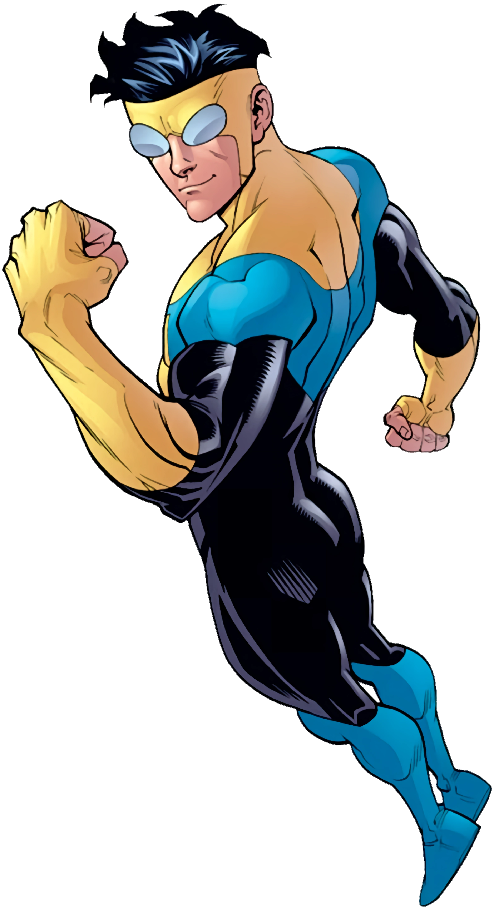

Invincible
Mark Grayson A.K.A "Invincible" is the main character of the Show and Comics series Invincible He is part Viltrumite as his father Omni-Man is part viltrumite, a alien species with extreme superhuman strength, speed, durability, and the ability of flight
